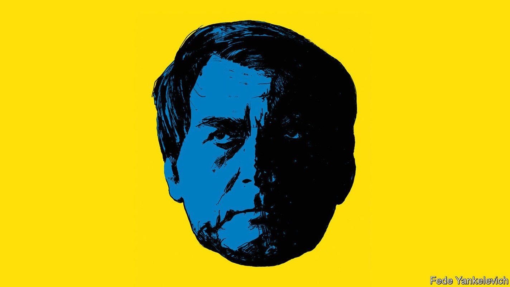
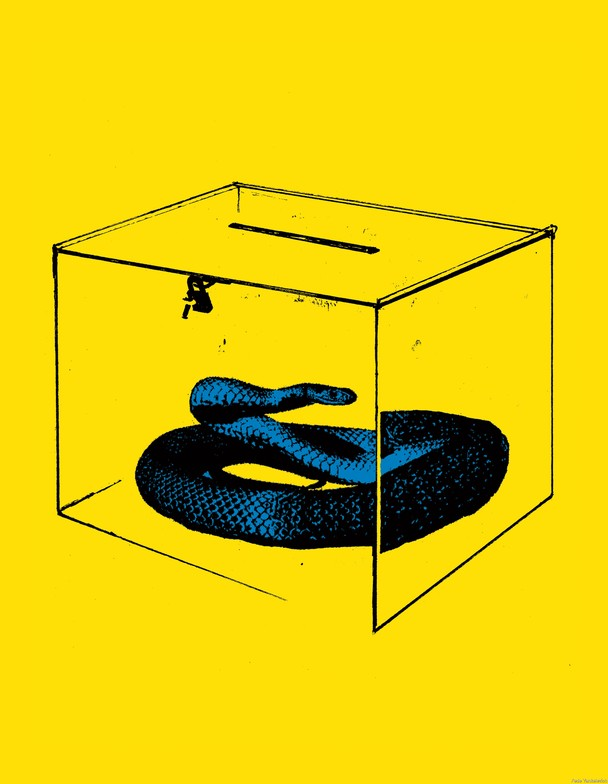

Might Jair Bolsonaro try to steal Brazil’s election?
Ahead of a vote in October, the president has cast doubt on the whole process

The day after Donald Trump urged a mob to storm the Capitol in Washington and overturn an election result that displeased him, Brazil’s president issued an ominous warning. Jair Bolsonaro, a man sometimes called the “Trump of the tropics”, suggested that he, too, doubted that his own country’s elections were fair. “If we don’t have…a way to audit the votes, we will have bigger problems than the United States,” he told supporters.
Listen to this story.Enjoy more audio and podcasts on iOS or Android.
Listen to this story
Save time by listening to our audio articles as you multitask
The votes he was referring to will be counted in October, when Latin America’s biggest democracy holds its most consequential election in decades. It will pit two political heavyweights against one another: Mr Bolsonaro, a former army captain who celebrates Brazil’s old military dictatorship, and Luiz Inácio Lula da Silva, a former metalworker who served as president between 2003 and 2010.
At the previous election, in 2018, a jail sentence for corruption prevented Lula from competing. Mr Bolsonaro defied the odds (and a stabbing) to win. But the polls say he is unlikely to win again. This time Lula leads by double digits.
Mr Bolsonaro is in a bind. He can no longer claim to be a political outsider. And he is a less plausible crusader against corruption, after three and a half scandal-plagued years in office. As hunger rises to levels not seen for decades, many voters will remember that Lula’s policies (hatched during a commodity boom), once helped fill their bellies. Few will forget Mr Bolsonaro’s mismanagement of the pandemic, which left over 660,000 dead.
Populist playbook
No incumbent likes to entertain the possibility of defeat. Mr Bolsonaro fumes that if Lula wins, Brazil will become another Venezuela, an undetachable “wagon on that train” of Latin American socialism, as he recently told Tucker Carlson, a pro-Trump American broadcaster. This is a stretch: Lula is of the democratic left, far removed from the brutal, incompetent socialists running Venezuela.
Some suspect that Mr Bolsonaro is afraid. Losing the presidency would mean losing presidential immunity, along with control over the federal police. This would expose him to myriad lawsuits and threats of criminal prosecution for such things as misuse of public funds (which he denies). “I have three alternatives for my future: being arrested, death, or victory,” he said last August. (After thinking for a bit, he later ruled out the first option.)
With the odds against him if he plays by the rules, the president is trying to re-write the rulebook. On July 13th his allies in Congress pushed through a constitutional amendment allowing the government to exceed previous limits on spending in an election year. That will let him launch new welfare schemes and expand popular existing ones just before the vote. He is also sowing doubt about the electoral process. He tells supporters he can only be defeated if the contest is rigged. This suggests he may dispute the result if he loses. What is unclear is how far he might go, and who might support him if he plays dirty.
Brazil’s electoral system is centralised. In the United States Mr Trump filed over 60 lawsuits and tried to intimidate local electoral officials into “finding” extra votes for him. Such tactics would not work in Brazil, where since the 1940s elections have been organised and adjudicated by independent electoral courts. Their highest body is the Superior Electoral Court, or the tse in Portuguese. This handles everything related to presidential elections. Seven justices, including three from the federal Supreme Court, serve two-year terms.
The system they oversee generally runs smoothly. Voting is compulsory for adults under 70 and optional for 16- and 17-year-olds. Citizens choose their president, governor and other elected officials all by entering numbers onto an electronic ballot. If in the first round no candidate receives more than 50% of unspoilt ballots, a run-off between the two leading candidates is held four weeks later. If no irregularities are found the tse confirms the winner’s victory with a certificate that is then formally presented to Congress.
Suppose Mr Bolsonaro were to lose, what then? He would have several weeks before he had to hand over the presidential sash on January 1st. He could legally challenge the result through the tse. Two classes of action can be brought to a justice’s desk, explains Henrique Neves, a former judge on the court. The first, an action for an electoral judicial investigation, can be filed before the election, and generally relates to campaigning irregularities.
The second, more serious action is a challenge to an electoral mandate. The Brazilian constitution says that a mandate can be formally investigated if there is evidence of economic abuse (such as illegal electoral spending), corruption (such as buying votes), or fraud (ballot-box tampering and the like). This must happen within 15 days of the winner being certified in December. If significant foul play is found to have occurred, the result could be overturned and a new winner declared. Such proceedings would involve a huge cast of characters. Other political parties could provide evidence. The chief public prosecutor, Augusto Aras, an ally of Mr Bolsonaro, could offer a legal opinion. But the final decision would lie with the tse and with the federal Supreme Court.
Historically such challenges are rare in presidential elections (albeit common in municipal ones). The tse opened its first action to challenge the electoral mandate of a sworn president in 2014, after the opposition disputed the mandate of Dilma Rousseff, Lula’s successor. Still, it proceeded cautiously, delaying any judgment against Ms Rousseff until Congress impeached her on separate charges. The complaints of Lula’s Workers’ Party that fake news influenced the outcome of the election in 2018, which Mr Bolsonaro won, also went nowhere. The courts will not nullify results without strong evidence of wrongdoing, says Alexandre Rollo, an expert in electoral law. They are unlikely to disqualify the winning candidate.
Mr Bolsonaro may not wish to rely on the courts alone. His relations with judges are not always cordial. In April he pardoned a deputy who threatened to throw a Supreme Court judge in a rubbish bin. The president refers to Edson Fachin, the head of the tse, as “the one who got Lula out of jail” (at the Supreme Court Mr Fachin annulled Lula’s convictions on procedural grounds after it transpired that he had been tried in the wrong court). On July 7th Mr Bolsonaro insinuated that Mr Fachin “already knows” the outcome of the election. He peddles such twaddle while insisting that Brazil’s electronic-voting system is susceptible to fraud. The system has been used in Brazil since 1996 with no evidence of irregularities. His legal team has yet to substantiate Mr Bolsonaro’s claim. He is being investigated for making it.
It may be harder for Mr Bolsonaro than it was for Mr Trump to persuade lots of people that a fair election was “stolen”. He cannot claim his opponents have unfairly tinkered with rules for postal ballots, because Brazil has no postal ballots, notes Anthony Pereira, a Brazil-watcher. His proposal to introduce a paper audit trail was rejected by Congress. In May 73% of Brazilians said they trusted the electronic ballot.
Yet he has forced the electoral court onto the defensive. In the eight months to May 2022, the cyber-defence wing of the armed forces submitted 88 questions about supposed vulnerabilities in the electoral process, many echoing Mr Bolsonaro’s talking points. The armed forces’ role in elections is usually restricted to transporting ballot boxes and protecting voters from thugs. This year the tse invited the top brass to be part of a “transparency commission” in order to counter allegations that the body is too secretive. But according to O Estado de S. Paulo, a newspaper, they are now planning their own election-monitoring process which involves testing ballot boxes and verifying the vote count.

Mr Bolsonaro appears bent on undermining trust in democratic institutions. Before the last election, his supporters energetically spread fake news about his opponents. Since then the pro-Bolsonaro parallel news universe has expanded. On WhatsApp and Telegram the president’s fans dismiss pollsters as propagandists and share unscientific surveys. Websites spreading disinformation are “popping up like gremlins”, says Patricia Campos Mello, a journalist who recently won damages from Mr Bolsonaro after he suggested that she offered sex to a source. More than a third of Brazilians think there is “a big chance” the election will be rigged, says Datafolha, a pollster the bolsonaristas hate.
Mr Bolsonaro’s jousts with the judiciary and the media coincide with overreaches in the legislature. There he has won over politicians by doling out ministerial jobs and slices of a “secret budget”, made up of opaque grants awarded to lawmakers, which amounted to R$4.9bn, or $910m, in June. That same month senators narrowly avoided passing a provision to the constitutional amendment that could have given the president broad emergency powers over policies such as welfare payments (as it is, Mr Bolsonaro now has an extra $8bn to spend). The text was snuck into a version to be voted on that day, and only noticed by the opposition at the last minute.
Play fair, Jair
Beatriz Rey, a visiting fellow at Johns Hopkins University, likens this move to the autocratic tricks of Viktor Orban, the strongman prime minister of Hungary. This is a stretch. Mr Orban, whom Mr Bolsonaro met this year, has comprehensively nobbled his country’s courts and media, and successfully tilted the electoral playing field in his own favour. Mr Bolsonaro has not been able to do any of these things.
Nonetheless, his opponents fear that if the vote is close, he may claim he was robbed of victory and try to cling on by foul means. He might try to rouse an insurrectionary mob, as Mr Trump did last year. He might inspire a mutiny within the military police or army. He could even attempt a coup. The last option is extreme, but Brazil only emerged from a military dictatorship in 1985, and Mr Bolsonaro has waxed nostalgic about the good old days when the men with guns called the shots. “Any Brazilian who is not worried is not paying attention,” says Wallace Corbo of the Getulio Vargas Foundation, a think-tank.
Brazil has never truly grappled with its dictatorial past. Some within the army still believe they have a duty to intervene to “safeguard” democracy. Mr Bolsonaro’s running-mate, Walter Braga Netto, a retired general, has at times used menacing language. “Either we have clean elections, or we won’t have elections,” he said last year. In the United States, no one thought the army would back Mr Trump’s coup attempt. In Brazil, some people are not sure what the top brass might do.
Others are more sanguine. “I don’t think that the military would be prone to do any political adventure to defend [Mr] Bolsonaro,” says Vinícius de Carvalho of King’s College London. Conditions are very different from 1964, when the army last took power. Then it had the support of business and media elites, the United States and the centrão, a posse of pork-barrel politicians. It is difficult to imagine any of these groups backing a coup now. Most of the president’s supporters do not support the idea, either.
A bigger risk is a split within the armed forces, suggests Mr Carvalho. In 1964 it was a three-star lieutenant-general who started the coup, not a four-star general, he notes. Analysts also look to the military police, who outnumber Brazilian soldiers. Many support Mr Bolsonaro. It is possible that some could join in protests if he loses, or refuse to quell pro-Bolsonaro rioters.
This is the most likely outcome. This election has much in common with some of Latin America’s explosive electoral disputes of recent years, notes Ivan Briscoe of Crisis Group, a think-tank. “The people are ready to fight for democracy,” says José Carlos Bernardi, a journalist who supports Mr Bolsonaro. On July 9th a federal prison guard shouting pro-Bolsonaro statements shot and killed a Workers’ Party activist. The president condemned the murder, but supporters remain bellicose. Some fear there could be an attempt to stop the elections on September 7th, which marks 200 years of independence from Portugal.
There is another way things could pan out. If Mr Bolsonaro were to lose, he could negotiate his departure in exchange for immunity, in what political scientists call a “pacted transition”. This is how the military regime ended. If no one ends up being held accountable, few would be pleased. But it is a sad indictment of Brazil under Mr Bolsonaro that this may be the country’s least dangerous option. ■